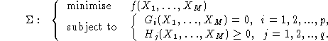
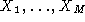
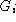
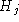
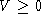

Next: Function lmisolver
Up: LMITOOL: a Package for
Previous: Contents
Many problems in systems and control can be formulated as follows
(see [2]):

where
-
 are unknown real matrices, referred to as the
unknown matrices,
-
f is a real linear scalar function of the entries of the unknown
matrices ; it is referred to as the objective function,
-
 's are real matrices with entries which are affine functions of the
entries of the unknown matrices, ;
they are referred to as ``Linear Matrix Equality'' (LME) functions,
-
 's are real symmetric matrices with entries which are affine functions
of the entries of the unknown matrices ; they are referred to as
``Linear Matrix Inequality'' (LMI) functions. (In this report,
the  stands for V positive semi-definite unless stated otherwise).
The purpose of LMITOOL is to solve problem  in a user-friendly manner
in Scilab, using the code SP [1]. This code is intended for
small and medium-sized problems (say, up to a few hundred variables).
in a user-friendly manner
in Scilab, using the code SP [1]. This code is intended for
small and medium-sized problems (say, up to a few hundred variables).
Scilab Group